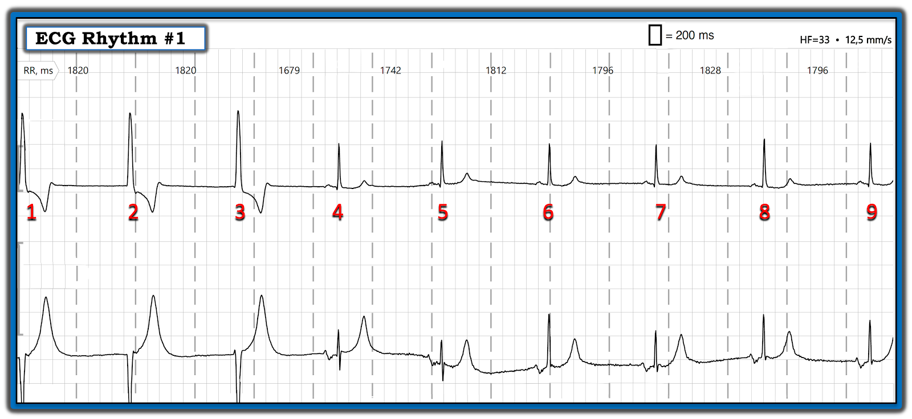
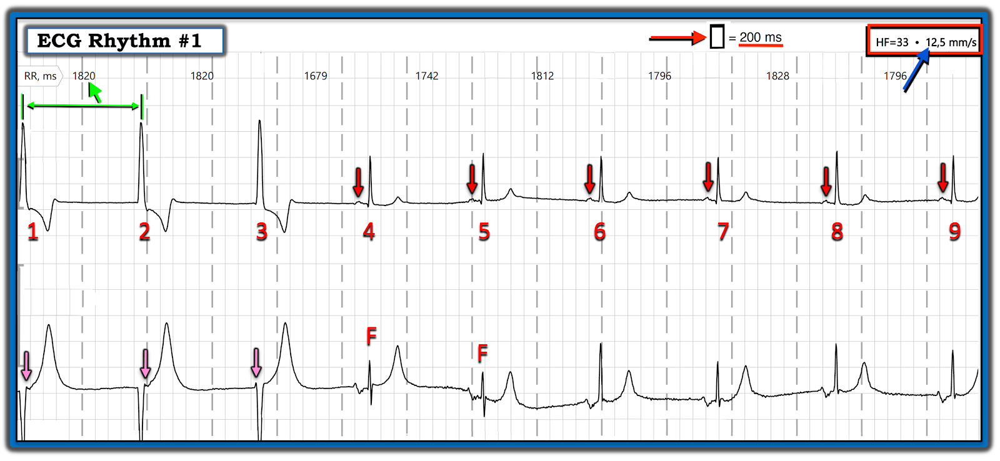
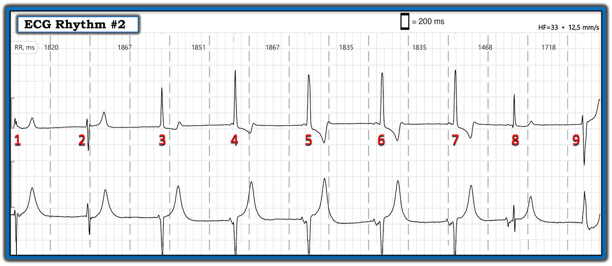
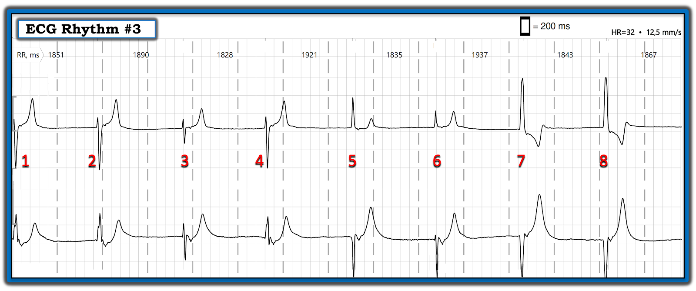
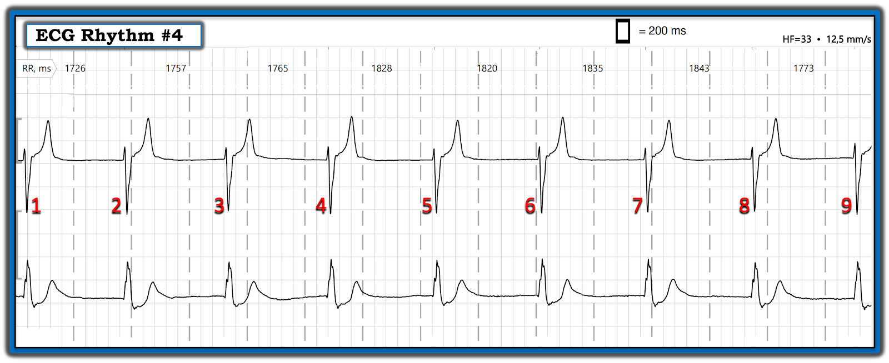
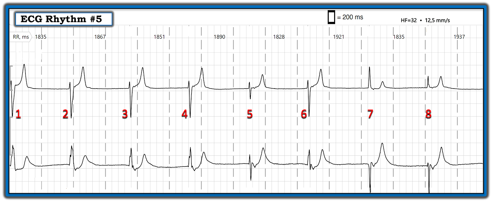
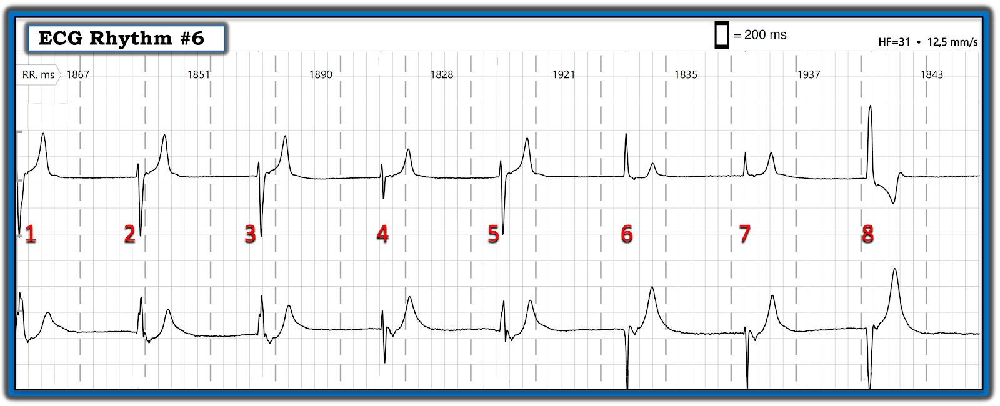
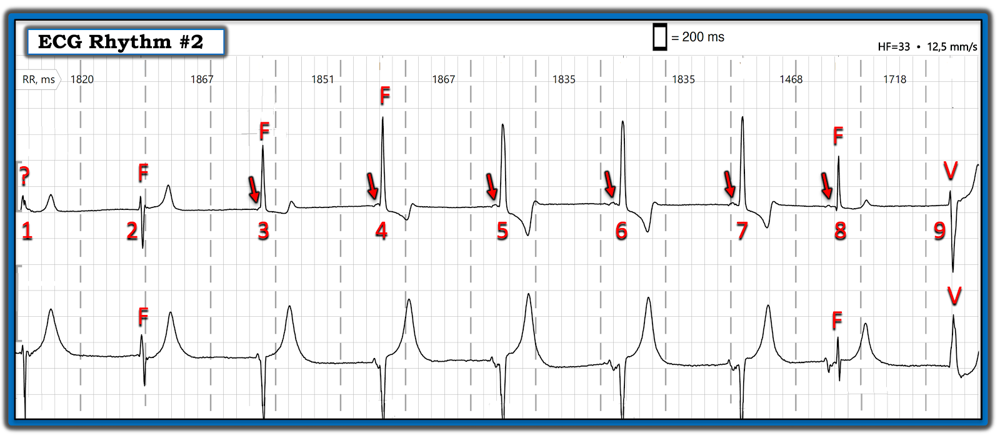
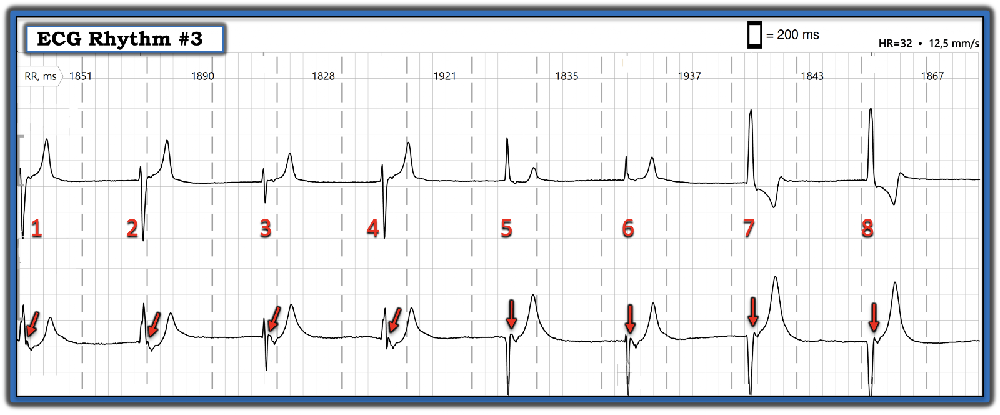

ECG Blog #382 — Holter cho thấy điều gì?
Tôi được gửi bản ghi Holter trong Hình 1 — nhưng không kèm theo bất kỳ thông tin lâm sàng nào.
CÂU HỎI:
Có tổng cộng 9 phức bộ QRS trên 2 chuyển đạo theo dõi ghi đồng thời.
- BẠN sẽ diễn giải nhịp trong Hình 1 như thế nào?
- Bạn thấy bao nhiêu sóng P?
- Tại sao phức bộ QRS của các nhát #4 và 5 ở chuyển đạo phía dưới trông khác với 7 nhát còn lại?
- Bạn nghi ngờ chẩn đoán lâm sàng là gì?


===================================
LƯU Ý: Hệ thống ghi được dùng cho các dải nhịp trong bài hôm nay có thể khác với hệ thống bạn quen dùng. Trong Hình 2 — tôi đã ghi chú một số điểm khác biệt này — và làm nổi bật hoạt động nhĩ.
- Lưu ý trong Hình 2 — ở góc trên bên phải của dải nhịp này (trong hình chữ nhật MÀU ĐỎ) — tốc độ ghi là 12.5 mm/giây (thay vì tốc độ 25 mm/giây mà nhiều người trong chúng ta vẫn quen dùng) — NHƯNG — chiều rộng của mỗi ô lớn trên giấy kẻ ô điện tâm đồ đã được giảm đi 50% (để mỗi ô chữ nhật nhỏ trên giấy kẻ ô điện tâm đồ này vẫn tương ứng với 200 ms = 1/5 giây — như mũi tên MÀU ĐỎ chỉ ra).
- Kết quả là — thời gian để ghi 5 ô chữ nhật nhỏ này trên mỗi dải nhịp trong bài hôm nay vẫn là 1.0 giây (mỗi khoảng 1.0 giây được ngăn cách bằng các đường chấm thẳng đứng MÀU XÁM).
- Ưu điểm của hệ thống ghi này là biên độ QRS của mỗi phức bộ được giữ nguyên — trong khi có thể hiển thị một dải nhịp dài hơn và dễ đọc hơn (tức là, Dải nhịp #1 hiển thị trọn 15 giây nhịp của ca hôm nay! — thay vì các dải nhịp 6-10 giây thông thường mà nhiều người trong chúng ta vẫn quen).
- Cuối cùng — Lưu ý rằng mỗi khoảng R-R trong Hình 2 đã được tính chính xác sẵn cho bạn. Ví dụ — khoảng R-R giữa nhát #1-2 = 1820 ms ( = 1.82 giây = 9.1 ô nhỏ, theo các mũi tên MÀU XANH LÁ ==> tương ứng với tần số tim 300 ÷ 9.1 = 33 nhịp/phút).
- ĐIỂM THEN CHỐT (PEARL) #1: Phép tính do máy tính thực hiện này cho phép chúng ta nhận ra ngay lập tức những thay đổi nhỏ của tần số tim (tức là, khoảng R-R trước nhát #4 = 1679 ms — ngắn hơn đáng kể so với khoảng R-R 1820 ms của vài nhát đầu trong bản ghi này).
===================================
Có Bao Nhiêu Sóng P trong Dải nhịp #1?
Lợi ích của việc có 2 chuyển đạo ghi đồng thời trên một dải nhịp — là cho phép chúng ta thấy những dấu hiệu điện tâm đồ có thể chỉ nhìn thấy được ở một trong 2 chuyển đạo đang theo dõi.
- Sóng P xoang với khoảng PR hằng định được thấy rõ đi trước các nhát từ #4 đến 9 (các mũi tên MÀU ĐỎ ở chuyển đạo theo dõi phía trên trong Hình 2).
- Sóng P ở chuyển đạo phía trên của Hình 2 dương, dù biên độ nhỏ. Các sóng P đi trước các nhát từ #4 đến 9 này — lớn hơn và hai pha ở chuyển đạo theo dõi phía dưới.
- Phức bộ QRS của các nhát #1,2,3 rộng hơn — và trông rất khác ở cả hai chuyển đạo theo dõi trong Hình 2 so với hình dạng QRS của các nhát xoang từ #4 đến 9. Các nhát rộng hơn này không có sóng P xoang đi trước — gợi ý rằng chúng là các nhát thoát thất! Khoảng R-R ngăn cách các nhát thất này = 1820 ms — tương ứng với tần số thất ~33/phút (hoàn toàn phù hợp với khoảng tần số thông thường của nhịp thoát tự thất).
- ĐIỂM THEN CHỐT #2: Việc khoảng R-R đi trước sự trở lại của nhát thứ 1 được dẫn truyền từ xoang ( = nhát #4) ngắn hơn ( = 1679 ms) so với khoảng R-R 1820 ms của 3 nhát thoát thất — gợi ý rằng lý do nhịp xoang trở lại bắt đầu từ nhát #4 là do tần số phát xung của nút xoang đã tăng lên đủ để vượt qua tần số của nhịp thoát tự thất!
- ĐIỂM THEN CHỐT #3: Lưu ý rằng khoảng R-R thay đổi đáng kể giữa các nhát dẫn truyền từ xoang từ #4 đến 9 (tức là, từ 1679 ms đến 1828 ms) — tương ứng với sự dao động tần số của nhịp chậm xoang từ 36 xuống 33/phút. Từ dải nhịp ban đầu này, điều đó gợi ý cho tôi rằng — các dải nhịp khác trong bản ghi Holter 24 giờ của bệnh nhân này có lẽ sẽ cho thấy những đợt thoát thất với thời gian kéo dài khác nhau, khi tần số nhịp chậm xoang giảm xuống dưới tần số thoát thất!
- ĐIỂM THEN CHỐT #4: Xét theo nguyên nhân mà tôi nghi ngờ để giải thích cơ chế thay đổi nhịp trong Hình 2 — tôi đã xem kỹ hơn chuyển đạo theo dõi phía dưới để tìm hoạt động nhĩ bị che khuất một phần. Lưu ý những khác biệt nhỏ nhưng có thật về hình dạng QRS của 3 nhát đầu tiên ở chuyển đạo phía dưới (tức là, một khía giả r' ở cuối QRS của các nhát #1 và 2 mà không thấy ở cuối nhát #3 — và một sóng dương khởi đầu thêm vào ở đầu nhát #3 mà không thấy ở đầu các nhát #1 và 2). Điều này gợi ý mạnh mẽ rằng sóng P xoang vẫn xuất hiện suốt dải nhịp này — và bị che khuất một phần dưới các mũi tên MÀU HỒNG!


Vì Sao Nhát #4 và 5 Trông Khác Biệt?
Mặc dù hình dạng QRS của từng nhát dẫn truyền từ xoang ở chuyển đạo theo dõi phía trên trong Hình 2 trông giống nhau — các nhát #4 và 5 rõ ràng khác về hình dạng so với 7 nhát còn lại ở chuyển đạo theo dõi phía dưới!
- Các nhát #4 và 5 biểu hiện hình dạng hẹp hai pha (sóng R và sóng S gần bằng nhau) ở chuyển đạo phía dưới. Đây là hình dạng trung gian giữa QRS chủ yếu dương của các nhát dẫn truyền từ xoang #6 đến 9 — và QRS rộng hơn, chủ yếu âm của các nhát #1 đến 3, là các nhát thoát thất.
- ĐIỂM THEN CHỐT #5: Lời giải thích hợp lý nhất cho việc phức bộ QRS của các nhát #4 và 5 ở chuyển đạo theo dõi phía dưới trông khác biệt và có hình dạng trung gian giữa hình dạng QRS của 3 nhát thoát thất ban đầu và các nhát dẫn truyền thuần túy từ xoang theo sau ( = các nhát #6 đến 9) — là các nhát #4 và 5 hẳn phải là nhát hỗn hợp! Việc xác định các nhát #4 và 5 là nhát "hỗn hợp" (F) khẳng định nguồn gốc thất của các nhát #1,2,3. Điều này hợp lý vì nhịp nền trong ca hôm nay có vẻ là nhịp chậm xoang rõ rệt kèm loạn nhịp xoang, với nhịp thoát thất xuất hiện khi tần số nút SA giảm xuống dưới 33/phút.
- LƯU Ý: Dải nhịp trong Hình 2 là một bản ghi Holter — vì vậy những dao động đường nền do nhiễu mà chúng ta thấy, cùng với một số thay đổi biên độ QRS ở các nhát xoang #6 đến 9 là điều không bất ngờ. Dù vậy — sự khác biệt về hình dạng QRS giữa các nhát #4,5 so với các nhát #6 đến 9 ở chuyển đạo phía dưới rõ ràng là có thật, và được giải thích hợp lý nhất bằng cách diễn giải các nhát #4 và 5 là nhát hỗn hợp.
BẠN Nghi Ngờ Chẩn đoán Lâm sàng Là Gì?
Như đã nói ở trên — tôi không có thông tin lâm sàng nào (thậm chí không biết cả tuổi của bệnh nhân) vào lúc được gửi bản ghi ban đầu này. Dù vậy — Cái thường gặp thì hay gặp.
- Mặc dù có nhiều dấu hiệu điện tâm đồ đặc trưng cho SSS (hội chứng suy nút xoang – Sick Sinus Syndrome) — cho đến nay, nhịp khởi đầu thường gặp nhất của hội chứng này là nhịp chậm xoang kèm loạn nhịp xoang. Thường có một giai đoạn dưới lâm sàng kéo dài (có thể tới một thập kỷ hoặc hơn!) — trong đó nhịp chậm xoang và loạn nhịp xoang có thể là biểu hiện duy nhất của SSS, dù chưa tới mức gây ra triệu chứng.
ĐIỂM THEN CHỐT #6:
Như tôi đã bàn trong bài tổng quan về SSS (Xem ECG Blog #342 để biết chi tiết) — việc xác lập chẩn đoán rằng nhịp chậm xoang là biểu hiện của SSS — sẽ phụ thuộc vào những điều sau:
- Tìm hiểu tuổi của bệnh nhân (tức là, SSS thường gặp nhất ở người cao tuổi) — và tìm hiểu xem bệnh nhân có triệu chứng hay không? (tức là, có ngất - tiền ngất, mệt mỏi, khó thở, đau ngực?).
- Kiểm tra phần còn lại của bản ghi Holter xem các đợt nhịp chậm có chủ yếu xảy ra vào ban đêm không? (vì ngưng thở khi ngủ là một nguyên nhân dễ điều trị gây nhịp chậm ban đêm, cũng như các rối loạn nhịp khác).
- Kiểm tra tất cả các thuốc bệnh nhân đang dùng (kể cả các sản phẩm thảo dược). Bạn cần tìm các thuốc có khả năng làm chậm tần số tim — có thể là nguyên nhân gây nhịp chậm (Đừng quên hỏi về thuốc nhỏ mắt chẹn beta — vốn được hấp thu một phần, và có thể là một nguyên nhân do thầy thuốc (iatrogenic) gây nhịp chậm rất dễ bị bỏ sót).
- Loại trừ các nguyên nhân tiềm tàng khác gây nhịp chậm (tức là, thiếu máu cục bộ - nhồi máu gần đây; suy giáp).
- ĐIỀU CỐT LÕI: Mặc dù còn nhiều câu hỏi cần được trả lời về đối chiếu lâm sàng của ca hôm nay — tôi đã ngay lập tức nghĩ đến SSS vì về mặt thống kê đây là nguyên nhân thường gặp nhất của một nhịp như nhịp chúng ta thấy trong Hình 2.
===================================
Holter 24 Giờ Còn Cho Thấy Điều Gì Khác?
Tôi được gửi thêm một số dải nhịp 15 giây từ bản ghi Holter 24 giờ của bệnh nhân này. Ngoài ra — tôi còn được cung cấp Báo cáo Tổng kết Holter. Các dấu hiệu điện tâm đồ đáng chú ý trong bản tổng kết này bao gồm:
- Tần số tim trung bình chung trong ngày theo dõi vào khoảng 45-50/phút. Tần số không giảm xuống dưới 30/phút — và không vượt quá 100/phút. Nhịp chậm không chỉ giới hạn vào ban đêm.
- Không có khoảng ngưng nào quá 2.0 giây.
- Có PVC rải rác trong ngày, không có dạng lặp lại bền bỉ.
- 2 đợt ngắn SVT (có lẽ là nhịp nhanh nhĩ).
- Chuyển đổi từng lúc từ phức bộ QRS rộng sang hẹp (tương tự như trong Hình 2).
Dưới đây, trong Dải nhịp #2 đến 6 — là một số dải nhịp bổ sung được chọn lọc mà tôi nhận được. Những bản ghi này có ủng hộ nhận định ban đầu của tôi không?










===================================
SUY NGHĨ CỦA TÔI về Dải Nhịp #2 đến 6:
Nhìn chung — các dải nhịp bổ sung này ủng hộ nhận định ban đầu của tôi.
Dải nhịp #2:
Thật đáng kinh ngạc — Chúng ta thấy không dưới 7 biến thể hình dạng QRS trong 9 nhát ở Dải nhịp #2. Để rõ ràng, trong Hình 3 — tôi đã đánh dấu các sóng P trên bản ghi này (các mũi tên MÀU ĐỎ trong Hình 3).
- Tôi thấy khó xác định nhát nào (nếu có) trong 9 nhát ở Dải nhịp #2 là nhát dẫn truyền thuần túy từ xoang.
- Mặc dù phức bộ QRS của nhát #8 xuất hiện sớm hơn dự kiến và trông giống QRS của các nhát dẫn truyền từ xoang trong Hình 2 — nhát này lại hai pha ở chuyển đạo theo dõi phía dưới, và trước đó chúng ta đã xác định rằng các nhát hai pha #4 và 5 ở chuyển đạo phía dưới của Hình 2 là nhát hỗn hợp (F).
- Vì lý do này — tôi nghi ngờ nhát #2 trong Hình 3 cũng là một nhát hỗn hợp (vì nhát #2 cũng hai pha ở chuyển đạo phía dưới).
- Các nhát #3 đến 7 trong Hình 3 thể hiện các mức độ khác nhau của nguồn gốc thất, có hoặc không kèm một phần hỗn hợp. Lưu ý rằng khoảng PR của các nhát như #3,4,5 rõ ràng là quá ngắn để dẫn truyền bình thường (do đó tạo điều kiện cho một mức độ hỗn hợp nhất định).
- Nhát #9 thì khác — và cho chúng ta thấy một hình dạng khác (V) của nhát rộng này ở cả chuyển đạo theo dõi phía trên lẫn phía dưới (so với hình dạng của các nhát thoát thất trước đó ở 2 chuyển đạo này). Do đó — Dường như có ít nhất 2 vị trí khác nhau ở thất cho nhịp thoát thất!
- Cuối cùng — tôi đặt một dấu hỏi (?) phía trên nhát #1 — vì tôi không thể xác định nhát này là gì (tức là, Thoát thất, có thể kèm hỗn hợp với một vị trí khác nữa ở thất?).
ĐIỂM THEN CHỐT #7: Nguyên nhân cụ thể của từng nhát trong các bản ghi được chọn này không quan trọng. Thay vào đó — Điều quan trọng là "chủ đề" của rối loạn nhịp tổng thể trong báo cáo Holter hôm nay.
- "Chủ đề" tổng thể của các dải nhịp này — là có loạn nhịp xoang rõ rệt nền kèm nhịp chậm, với các nhịp thoát thường xuyên xuất phát từ một hoặc nhiều vị trí ở thất. Điều này tạo ra nhiều loại nhát hỗn hợp giữa các nhát dẫn truyền từ xoang và các nhịp thoát thất.


===================================
Dải nhịp #3:
"Chủ đề" tổng thể của bản ghi Holter hôm nay vẫn tiếp tục. Để rõ ràng, trong Hình 4 — tôi đã đánh dấu các sóng P trên bản ghi này (các mũi tên MÀU ĐỎ trong Hình 4).
- Không sóng P nào trong Hình 4 đi trước QRS. Do đó — không có nhát dẫn truyền từ xoang nào trong Dải nhịp #3. Thay vào đó — tất cả các nhát trong Hình 4 đều phải có nguồn gốc thất!
- Nhát #3 rõ ràng biểu hiện hình dạng QRS trung gian (Thấy rõ nhất ở chuyển đạo theo dõi phía dưới — nơi nhát #3 có hình dạng trung gian giữa QRS rộng dương của các nhát #1,2,4 — và QRS rộng âm của các nhát #7 và 8). Do đó — Nhát 4 là một nhát hỗn hợp giữa 2 ổ thoát thất khác nhau!
- Các nhát #5 và 6 âm nhưng hẹp cũng rõ ràng có hình dạng QRS trung gian giữa QRS rộng dương của các nhát #1,2,4 — và QRS rộng âm của các nhát #7 và 8. Do đó — các nhát #5 và 6 cũng là nhát hỗn hợp giữa 2 ổ thoát thất khác nhau!


===================================
Dải nhịp #4, 5 và 6:
"Chủ đề" của bản ghi Holter hôm nay tiếp tục với 3 dải nhịp cuối cùng này.
- Nhịp chậm rõ rệt suốt bản ghi — với thoát thất thường xuyên từ các ổ khác nhau ở thất — thường kéo dài trong nhiều giai đoạn không có nhịp xoang trở lại.
===================================
Tổng Hợp Lại Tất cả:
Sau đó tôi được biết bệnh nhân trong ca hôm nay là một phụ nữ ngoài 80 tuổi — vì vậy khả năng hội chứng suy nút xoang càng tăng! Như tôi đã nói ở trên, Báo cáo tổng kết Holter cho thấy những điều sau:
- Tần số tim trung bình chung trong ngày theo dõi vào khoảng 45-50/phút. Tần số không giảm xuống dưới 30/phút — và không vượt quá 100/phút. Nhịp chậm không chỉ giới hạn vào ban đêm.
- Không có khoảng ngưng nào quá 2.0 giây.
- Có PVC rải rác trong ngày, không có dạng lặp lại bền bỉ.
- 2 đợt ngắn SVT (có lẽ là nhịp nhanh nhĩ).
Về lâm sàng — mức độ nhịp chậm rõ rệt dai dẳng là đáng lo ngại, ngay cả khi chưa thấy các khoảng ngưng kéo dài (>2.5 đến 3.0 giây) — và ngay cả khi bệnh nhân này chưa báo cáo "nhịp chậm có triệu chứng".
- Việc tần số tim không vượt quá 100/phút trong suốt một ngày gợi ý có thể có suy giảm đáp ứng tần số tim (chronotropic incompetence) — một dấu hiệu đáng lo ngại khác của SSS.
- Các đợt SVT ngắn phù hợp với khả năng có hội chứng "nhịp nhanh–nhịp chậm" (Tachy-Brady) — trong đó nhiều bệnh nhân SSS luân phiên giữa nhịp chậm rõ rệt và các loại nhịp nhanh khác nhau.
- Diễn tiến: Diễn giải bản ghi Holter này của chúng tôi đã được chuyển tới bác sĩ chăm sóc ban đầu của bệnh nhân. Tôi dám cá rằng bệnh nhân này sẽ sớm được cấy máy tạo nhịp vĩnh viễn.

==================================
Lời cảm ơn: Xin cảm ơn Andreas Röschl (từ Neumarkt, Đức) đã chia sẻ ca bệnh và bản ghi này.
==================================
PHẦN BỔ SUNG (ngày 3 tháng 6 năm 2023):
- Audio PEARL (2:45 phút) dưới đây ôn lại các dấu hiệu điện tâm đồ của SSS.

==================================
Các bài ECG Blog liên quan đến ca hôm nay:
- ECG Blog #185 — Ôn lại cách tiếp cận Ps, Qs và 3R trong đọc nhịp có hệ thống.
- ECG Blog #342 — ôn lại chẩn đoán điện tâm đồ của SSS (hội chứng suy nút xoang – Sick Sinus Syndrome)
- ECG Blog #256 — Ôn lại một ca SSS khác.
- ECG Blog #128 — ECG Blog #129 — và ECG Blog #133 — để ôn lại về Nhát Hỗn hợp (các ca này cũng có phân ly nhĩ thất).
- ECG Blog #295 — Ôn lại khái niệm BBB do nhịp chậm ( = blốc pha 4 – Phase 4 block). Nội dung này được bàn gần cuối trang (tức là, trong Pearl #5 — nằm ngay dưới Hình 6).
- Bài ngày 5 tháng 7 năm 2018 trên Dr. Smith's ECG Blog — (Xin xem Bình luận của tôi ở cuối trang để ôn lại chẩn đoán điện tâm đồ của Hội chứng Suy nút xoang).